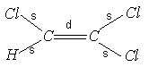
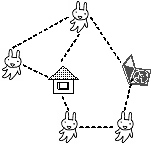

鹿島 久嗣 (かしま ひさし)
京都大学 大学院情報学研究科
知能情報学専攻 教授
 
(東○ワ○○ド○○エ○にて)
コンピュータを用いたデータ解析技術の研究と開発を行っている研究者です。
「機械学習」と呼ばれるコンピュータ科学、人工知能の一分野を専門としています。
特にグラフやネットワーク構造をもったデータにおける、予測モデリングを得意としています。
近ごろはクラウドソーシングやヒューマンコンピュテーションによる人間と機械の協調問題解決に取り組んでいます。
<鹿島を指導教員として検討しておられる方へ
>
<データ解析技術をビジネスに生かしたい民間企業の方へ
>
<研究室のページはこちら
>
| ごあいさつ | プロフィール | 研究紹介 | 研究業績 | 教育 | 研究日記 |